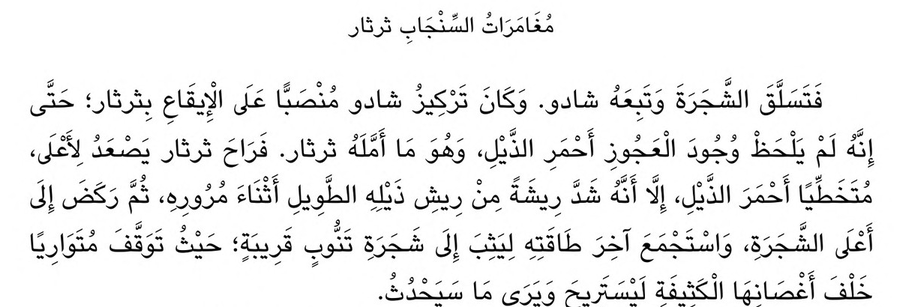

نقطة: قراءة النص العربي من الصور وملفات PDF
نقطة نموذج مفتوح المصدر يستخرج النص العربي من صور الصفحات والمستندات الممسوحة وملفات PDF، فتحصل على نص يمكنك نسخه والبحث فيه. ويكتب التشكيل كما ورد في الصفحة، ولا يضيف حركات من عنده. وقد حقق نموذجاه أعلى النتائج المنشورة في اختباري KITAB-Bench وMisraj-DocOCR، ويعمل الصغير منهما على الهاتف دون إنترنت.

ناتج نموذج نقطة 4B كما هو، دون تعديلما يقرؤه نقطة
- الكتب والمستندات الممسوحةيقرأ الصفحة بترتيبها الصحيح، من الكتب المطبوعة إلى الوثائق القديمة.
- ملفات PDFيقرأ صفحات الملف كلها، ويحتفظ بالعناوين والقوائم والجداول.
- التشكيلالنص المشكول يبقى مشكولًا، وغير المشكول يبقى بلا حركات.
- الجداولالعربية والإنجليزية، بترتيب أعمدتها كما في الأصل.
- الهويات وجوازات السفريقرأ منطقة MRZ ويتحقق من أرقام التدقيق فيها.
- على جهازكيعمل على خوادمك أو حاسوبك أو هاتفك، فلا تغادر مستنداتك أجهزتك.
طريقة الاستخدام
pip install "nuqta-ocr[vllm]" # Linux + NVIDIA GPU, fastest
pip install "nuqta-ocr[fast]" # transformers with fast kernels
pip install nuqta-ocr # transformers onlyfrom nuqta import OCR
if __name__ == "__main__":
ocr = OCR("nuqta-4b") # or "nuqta-0.8b" for small GPUs
print(ocr.read("page.jpg").text) # tashkeel only where printed
print(ocr.read("scan.pdf", mode="markdown").text) # headings, lists, HTML tables
print(ocr.read("passport.jpg", mode="id").fields) # MRZ fields with check digitsأسئلة شائعة
ما أفضل نموذج لاستخراج النص العربي من الصور؟
بحسب النتائج المنشورة في الاختبارين العامّين لقراءة النص العربي، يتصدر نموذج Nuqta-Arabic-OCR 4B: نسبة الخطأ في الحروف 0.106 في اختبار KITAB-Bench، و82.8 في اختبار Misraj-DocOCR، متقدمًا على Gemini وGPT وBaseer. والنموذج مفتوح المصدر برخصة Apache-2.0.
هل يحتفظ بالتشكيل؟
نعم، يكتب الحركات المطبوعة في الصفحة كما هي، ونادرًا ما يضيف حركة غير موجودة فيها.
كيف أستخرج النص من ملف PDF عربي؟
ثبّت المكتبة بالأمر pip install nuqta-ocr، ثم استدعِ OCR('nuqta-4b').read('file.pdf').text. ويمكنك أيضًا تجربته في المتصفح دون تثبيت أي شيء.
هل يعمل دون إنترنت؟
نعم، يعمل على خوادمك أو حاسوبك أو هاتفك دون اتصال، فتبقى مستنداتك عندك.
هل هو مجاني؟
نعم، النماذج والمكتبة مجانية ومفتوحة المصدر، ويمكن استخدامها في المشاريع التجارية.